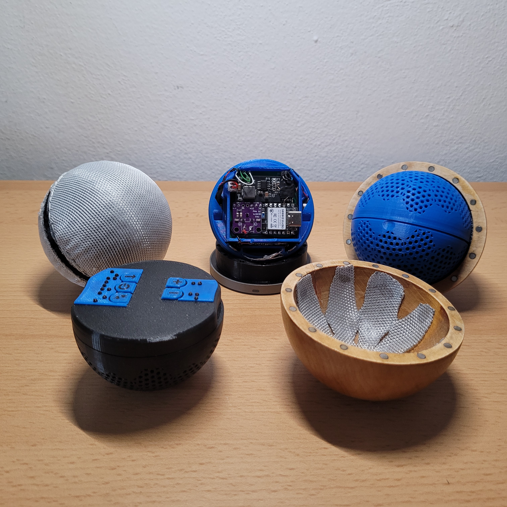
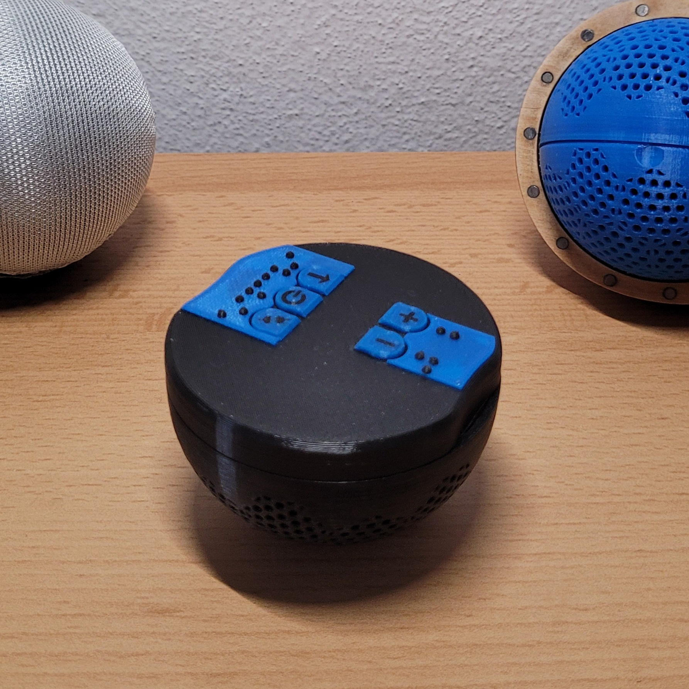
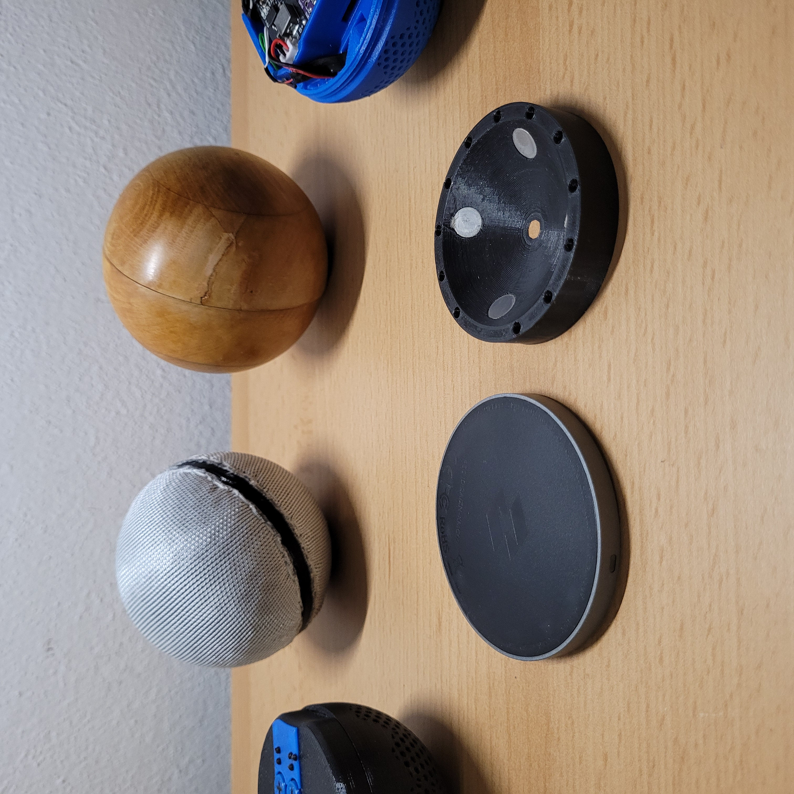

Hardware
Od MCU k reproduktoru
Vítejte na stránce, která dokumentuje projekt Toy4Blind. Cílem projektu je vyvinout interaktivní hračku pro zrakově pstižené děti.

Hračka
Co asi dělá?
Hračka je schopná rozpoznat 5 základních gest: poklepání, pád, klidový stav a kruh - nazákladě těchto gest provádí zvukovou a haptickou odezvu.
Moje vize je přidat více gest a také jednoduché herní režimi, které by zážitek ze hry prohloubily.


Ovladč
Jak hračku ovládat?
Ovladač je prvkem volitelným což je zmíněno níže, každopádně pokud hračku ovládá nevidomá osoba je to drobné zjednodušení.
Funkce:
- připojit se k několika hračkám
- prohazovat ovládanou hračku
- měnit hlasitost
- měnit zvukovou kategorii
- měnit herní režim
- vypínat hračku
Aplikace
K čemu aplikace?
Bez možnosti úpravy audia by se hračka po chvíli stala leda tak těžítkem.
Aby to takhle neskončio rozhodl jsem se udělat aplikaci která umožňuje hračku nejen ovládat, ale také nahrávat vlastní zvuky (wav soubory 16bit 44,1kHz) o maximální délce 2s (delší není třeba).


Nabíjení
Kam se strká nabíječka?
Z důvodu přístupnosti jsem zvolil bezdrátové nabíjení, které také umožňuje mít uzavřenou elektroniku. Tedy k nabití stačí položit hračku správnou orientací, která je naznačena výřezem, na libovolnou bezdrátovou nabíječku s Qi1 certifikací a vyšší, na obrázku je také vidět nabíjecí redukce, která je kompaibilní s MagSafe a zaručí správné zarovnání, pro maximální rychlost nabíjení.